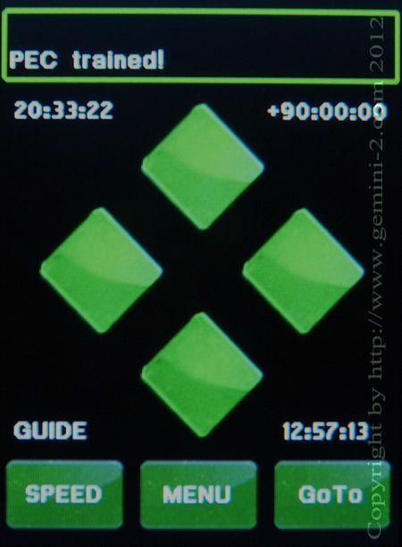

| Interactive Hand-Controller Menus - click on green button to Navigate |
|
 |
As you can see the message has changed to "PEC Trained" To see the PEC menu again, you will have to go through all the menus again starting with "MENU-->Mount-->PEC" To see what the PEC menu will look like after PEC is Trained, Click on the PEC Trained in the left menu. |